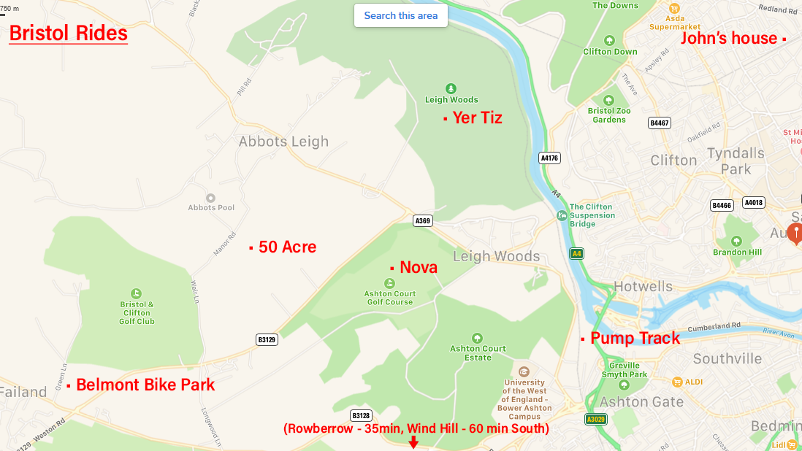

Bristol Riding
Hello chaps. I have put together this list of places to ride around Bristol with videos I found on YouTube. The first bunch, from Ashton Court to Belmont bike park, are all a short cycle or drive from my house.
Rowberrow and Wind Hill bike park are drivable within an hour.
Ashton Court - Nova Trail
Fifteen minutes ride from my house we have the Nova trail at Ashton Court. This is a blue grade, hard pack flow trail. You can ride it all in 30-40 mins, or section the more fun parts. Berms, rollers / doubles, small drops to enjoy.
Leigh Woods - Yer Tiz trail
Next to Ashton Court we have Leigh Woods with the blue grade Yer Tiz trail. Hard pack through the woods, with roots, rocks, rollers, rock gardens, berms. It can be ridden in 20 mins or so.
Leigh Woods - Unoffical trails
I've only found a couple of these so far, avoiding the gnarlier looking ones - don't want an injury by myself in the woods during covid! Would be up for exploring more.
50 Acre Wood
A few minutes from Ashton / Leigh Wood is 50 Acre Wood trail, a red, technical rooty circular trail which takes about 20 minutes to ride.
Belmont Bike Park
10 minutes ride up the road is Belmont Bike Park. It's free, I've only ridden the Main Line so far, the other stuff is more Down Hill or Jump Lines... The Main Line is fine though, flowy, with rollable jumps...
Brunel Way pump track
From the Woods above you can drop down the path to the River Avon and get to a pumptrack in the city in about 10 minutes. Places to eat / drink nearby too before riding home.
Wind Hill bike park
This place is near Longleat, one hour south from Bristol. It's just reopened after lockdown and I'm heading there to ride Bluetopia, Empuru and Pass the Dutchie next week... will let you know how it goes. They also have huge stuff to ride here that I won't be going anywhere near!
Entry is £10 and riders must sign up for a free membership and buy a ticket in advance
Blue / Red trails
Bigger stuff...
Rowberrow trails, The Mendips
I've not been here yet either, if I'd have found these videos before I expect I would have by now... It's 35 mins from Bristol and on the way to Wind Hill, so a day could be spilt half / half.
This is it for now... everything I've found so far - Excluding Wales / Forest of Dean which is quite close, I'm sure there's other stuff North of Bristol... The Cotswolds are 45 min North and may have more trails...